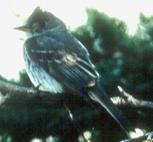

| These photographs accompany records that have been recently submitted to the committee. This record
was NOT ACCEPTED.  Greater Pewee Contopus pertinax 1 June 1998, Southeast Farallon Island, SF 1998-116 © 1998 Clyde Morris Back to CBRC Rare Bird Photos |